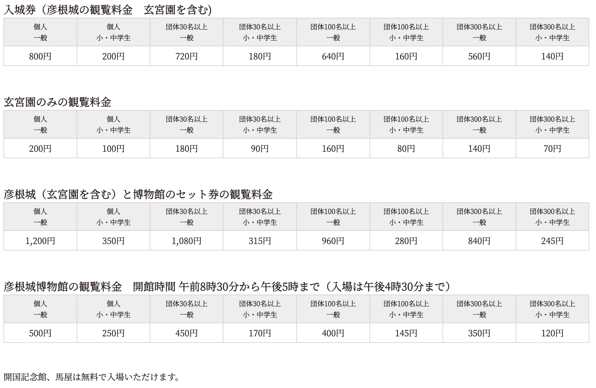
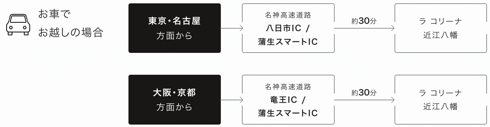

目次：湖東地区
1. 彦根城
姫路城、犬山城、松本城、松江城とともに国宝に指定されているお城。高さ21mと小さめの天守ですが、切妻破風、入母屋破風、唐破風など多様な様式を組み合わせた美しい造りが特徴的。重要文化財の太鼓門櫓や天秤櫓、馬屋など見どころが多くあり、また毎日3回、彦根市のマスコットである「ひこにゃん」が現れパフォーマンスを行います。
| 時間 | 営業時間 08:30～17:00 (最終入場は彦根城、玄宮園、開国記念館とも16:30まで) 終了時間までに退出いただくため、天守、天秤櫓、太鼓門櫓、西の丸三重櫓、馬屋の建物内は16:45に閉門します。 |
|---|---|
| 料金 |  |
| アクセス | 〒522-0061 滋賀県彦根市金亀町1-1 彦根駅より徒歩約15分 |
2. ラコリーナ近江八幡
緑の芝に覆われた屋根が印象的な、老舗菓子店「たねや」グループのフラッグシップショップ。メインショップの1階は広々とした吹き抜け空間で、和・洋菓子を販売しています。和菓子売り場では「たねや」全商品が揃いお土産の購入にもおすすめ。そして洋菓子売り場はクラブハリエ最大のバームクーヘン専門店になっています。また2階には自然のぬくもり溢れる開放的なカフェがあり、焼きたてのバームクーヘンなどがいただけます。
| 時間 | 営業時間 09:00～18:00 (フードコート 10:00-17:00) |
|---|---|
| 料金 | 無料 |
| アクセス | 〒523-8533 滋賀県近江八幡市北之庄町615-1  |
3. 八幡堀
お堀に沿って石積みや白壁の土蔵が立ち並び、その景観の美しさから映画や時代劇のロケ地にも使用されます。4月から11月頃までは遊覧船による水郷めぐりも実施。豊臣秀次が八幡堀と琵琶湖を繋いだことにより、多くの近江商人が行き交う商いの町としてさらに栄えたという歴史を持ちます。
5月中旬〜6月中旬にかけて、八幡堀遊歩道には花菖蒲が咲き誇り美しい風景を見せてくれます。最初は黄色い黄菖蒲、そのあと紫色の紫菖蒲がさきます。
| 時間 | 八幡堀めぐり営業時間 10:00～15:30（春・秋） 10:00～16:00（夏） 10:00～15:00（冬） |
|---|---|
| 料金 | 小人 1,000円（税込）※小学生未満無料、但し、席確保する場合有料。 ※2022年10月1日より大人1,500円 小人1,000円に価格改定いたしました。 |
| アクセス | 〒523-0821 滋賀県近江八幡市多賀町738-2 バス停「大杉町」下車すぐ |
4. 三井アウトレットパーク滋賀竜王
全店舗数が約240店入った三井アウトレットモール。京滋エリアでは初のアウトレット、規模的には近畿最大級の施設規模。高速道路竜王ICからのアクセスも良く、7000台の無料駐車場もある。
| 時間 | 営業時間 10:00～20:00(ショップ), 11:00～21:00(レストラン)※店舗により営業時間が異なります, 10:30～21:00(フードコート) |
|---|---|
| 料金 | 無料 |
| アクセス | 〒520-2551 滋賀県蒲生郡竜王町大字薬師字砂山1178-694 JRびわ湖線「野洲」「近江八幡」各駅から車で30分 高速道路竜王IC～500m |
5. 玄宮園
延宝5年（1677年）に4代藩主井伊直興が造営し、延宝7年（1679年）に完成。一説には、中国の瀟湘（しょうしょう）八景または近江八景を模して造られたと言われています。広い池を中心とした回遊式庭園で、園内の茶室「鳳翔台」では、庭園を鑑賞しながら、和菓子とともに薄茶をいただくことも可能。紅葉の季節には「錦秋の玄宮園ライトアップ」が開催され、大名庭園らしい秋の夜を楽しむことができます。
| 時間 | 公開時間 08:30～17:00 (最終入場は彦根城、玄宮園、開国記念館とも16:30まで) 終了時間までに退出いただくため、天守、天秤櫓、太鼓門櫓、西の丸三重櫓、馬屋の建物内は16:45に閉門します。 |
|---|---|
| 料金 |  |
| アクセス | 〒522-0061 滋賀県彦根市金亀町3 彦根駅より徒歩約15分 |